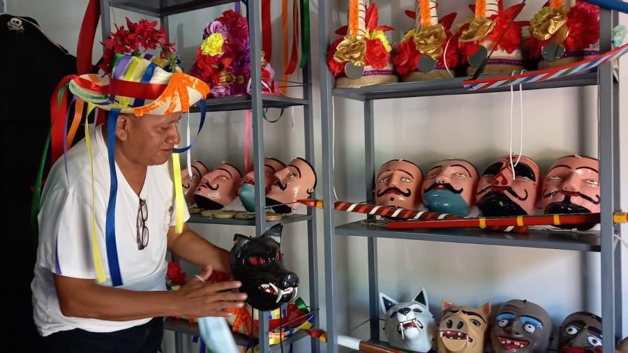
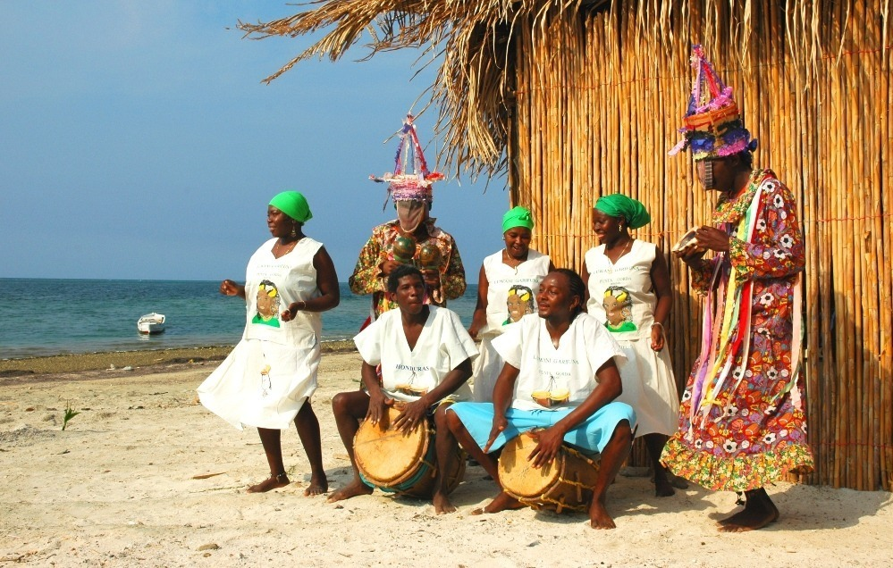
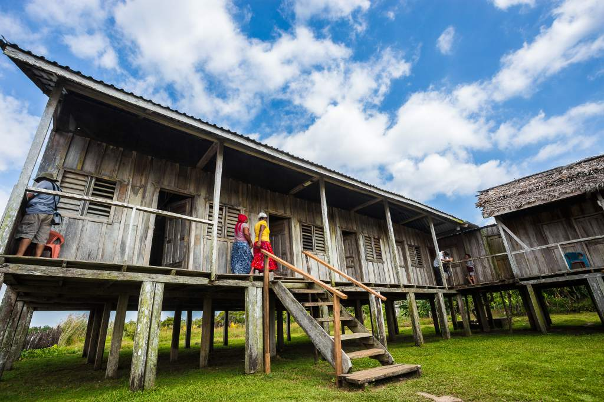
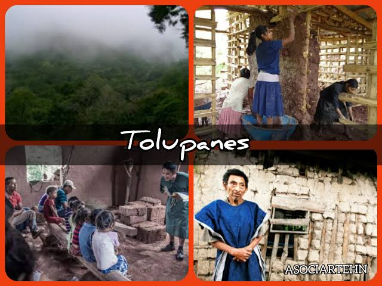
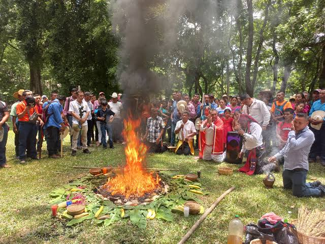
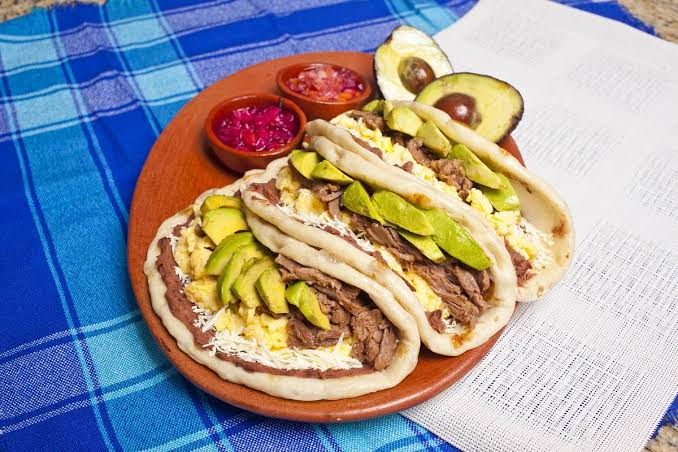
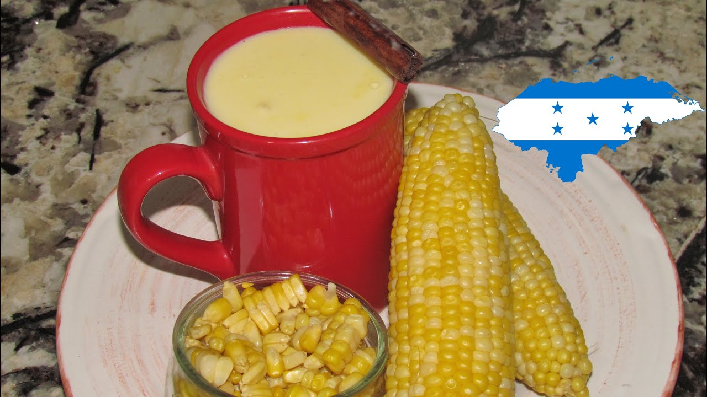
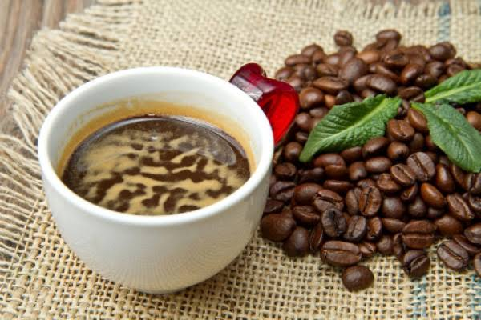

Pueblo Lenca
Con una importante presencia en el occidente y centro del país, conserva tradiciones artesanales y comunitarias.
Honduras es una nación de historia, diversidad cultural, tradiciones y sabores que forman parte de su identidad.
Francisco Morazán fue un político y militar hondureño del siglo XIX, recordado por su defensa de la unión centroamericana y de ideales republicanos. Su pensamiento forma parte de la memoria histórica de Honduras y de la región.
La conmemoración del Feriado Morazánico es una oportunidad para reflexionar sobre la historia nacional, reconocer a los próceres patrios y valorar el patrimonio que se transmite entre generaciones.
Conocer nuestra historia también es una forma de cuidar nuestra identidad.
Los pueblos indígenas y afrodescendientes contribuyen a la diversidad lingüística, artística, histórica y cultural de Honduras.

Con una importante presencia en el occidente y centro del país, conserva tradiciones artesanales y comunitarias.

Su herencia afroindígena se expresa en la música, la danza, la lengua y la gastronomía de la costa caribeña.

Posee una identidad cultural propia y una estrecha relación histórica con los territorios de La Mosquitia.

Mantiene comunidades y expresiones culturales especialmente vinculadas a zonas de Yoro y áreas cercanas.

Su historia está relacionada con la herencia maya y con comunidades del occidente de Honduras.
Una muestra de recetas, ingredientes y tradiciones que se comparten en diferentes regiones del país.

Tortilla de harina acompañada tradicionalmente de frijoles, mantequilla y queso, con otros ingredientes opcionales.

Preparación asociada a la costa caribeña, elaborada con caracol y leche de coco, entre otros ingredientes.

El tikin xik es una preparación de pescado tradicional de la península de Yucatán; en Honduras puede presentarse como referencia gastronómica regional mesoamericana, no como plato exclusivamente hondureño.

Bebida espesa de maíz tierno, preparada en distintas comunidades y disfrutada caliente o tibia.

El café de altura es parte importante de la producción agrícola y de la identidad de distintas regiones cafetaleras.